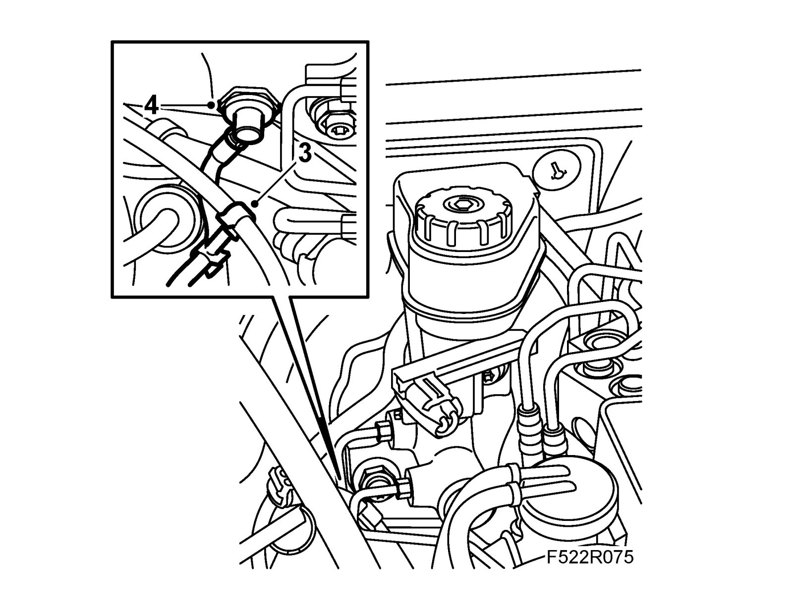
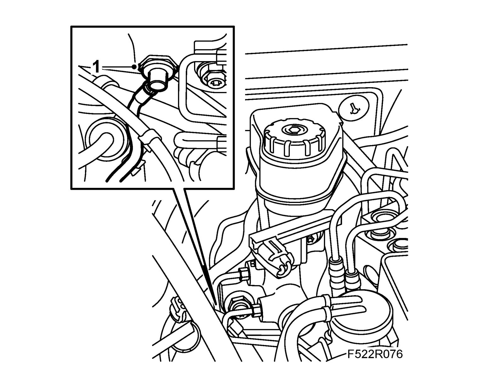
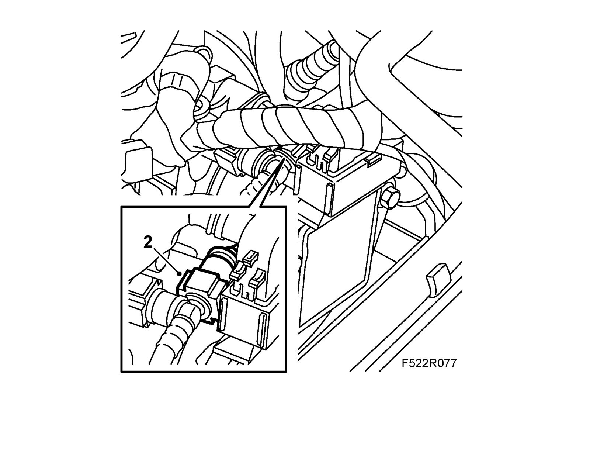
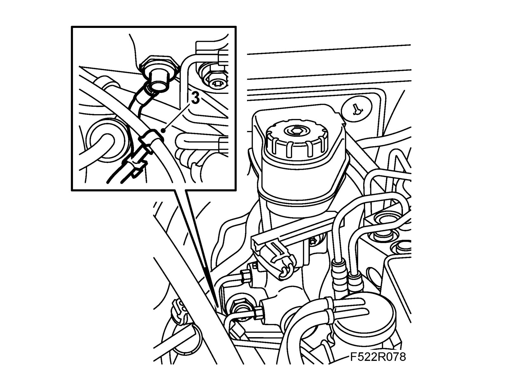

Vacuum Pipe, Brake Servo LHD (B207)
Vacuum pipe, brake servo LHD (B207)To remove
Warning
The turbocharger can be hot and great care must be observed.
1. Pump the brake pedal until the vacuum is removed from the brake servo.
2. Remove the pipe from the T-nipple on the vacuum pipe.
3. Aut: Remove the gear cable clips from the pipe.

4. Remove the pipe from the brake servo.
To fit
1. Fit the pipe to the brake servo.

2. Fit the pipe to the T-nipple on the vacuum pump.

3. Aut: Fit the gear cable clips.

4. Connect an exhaust extractor.
5. Start the engine and check the operation of the brake servo.